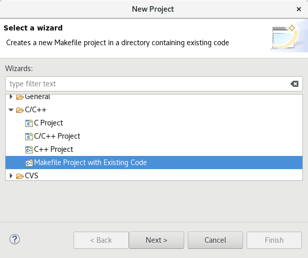
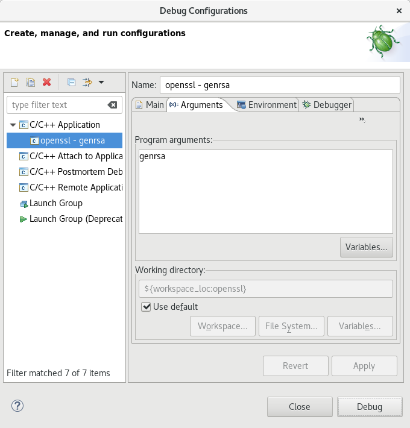

How to Debug OpenSSL with Eclipse
December 2017
OpenSSL
In the OpenSSL source directory, execute the following command:
$ ./config --debug --prefix=/tmp/openssl -Wl,--enable-new-dtags,-rpath,'$(LIBRPATH)'
--debug: compiles in debug mode
--prefix=/tmp/openssl: sets the install directory. You need to set
this flag in order for the compiled openssl to link with the
compiled libraries libcrypto and libssl (which are part of openssl)
-Wl,--enable-new-dtags,-rpath,'$(LIBRPATH)': same reason as
--prefix, this is to make sure that the compiled openssl links
with the compiled libraries libcrypto and libssl.
Then, compile OpenSSL:
$ make
Finally, install OpenSSL:
$ make install
Make sure that openssl loads libssl.so.1.1 and libcrypto.so.1.1 that you just compiled:
$ ldd /tmp/openssl/bin/openssl
linux-vdso.so.1 (0x00007ffc32241000)
libssl.so.1.1 => /tmp/openssl/lib/libssl.so.1.1 (0x00007f7acf5ac000)
libcrypto.so.1.1 => /tmp/openssl/lib/libcrypto.so.1.1 (0x00007f7acf0ad000)
libdl.so.2 => /lib64/libdl.so.2 (0x00007f7aceea9000)
libpthread.so.0 => /lib64/libpthread.so.0 (0x00007f7acec8a000)
libc.so.6 => /lib64/libc.so.6 (0x00007f7ace8a5000)
/lib64/ld-linux-x86-64.so.2 (0x00007f7acf851000)
libssl.so.1.1 binds to /tmp/openssl/lib/libssl.so.1.1 (not the
system library /lib64/libssl.so.1.1) and libcrypto.so.1.1 binds to
/tmp/openssl/lib/libcrypto.so.1.1 (not the system library
/lib64/libcrypto.so.1.1).
Eclipse
CDT
Make sure that you have Eclipse CDT.
Import
In the main menu, select File | New | Project:
Choose Makefile Project with Existing Code:

Click on Browse... and go to your OpenSSL source directory. Then, choose your toolchain for the indexer. Finally, click Finish.
Debugging
Go to Run | Debug Configurations:

Create a new "C/C++ Application" configuration. Choose your OpenSSL
project (openssl) and C/C++ Application (apps/openssl):
Set the arguments in the arguments tab (genrsa) and click on Debug:

Eclipse should now have started openssl and paused at the first line
of the main:
You can now debug OpenSSL with Eclipse!
Like this article? Get notified of new ones: